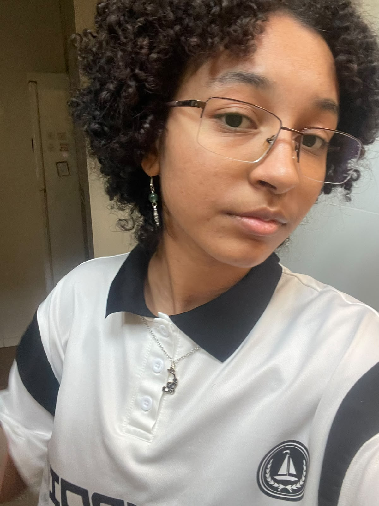
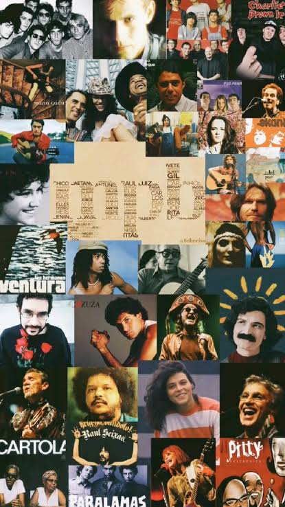

Sobre mim
Meu nome é Bianca Moreira De Oliveira, atualmente estou cursando o último ano do ensino médio integrado ao técnico em desenvolvimento de sistemas. Sou muito interessada em estudar, seja qual matéria for, mas me interesso muito por filosofia, química, matemática e psicanálise. Na área de desenvolvimento, gosto muito de banco de dados, estou me aproximando mais ao backend também, ao ser backend e scrum master no meu projeto de TCC, espero também gostar muito da disciplina de iot, por gostar bstante da parte de hardware, mesmo não tendo muito conhecimento. Fora dos estudos, penso muito sobre o meu futuro, gosto bastante de assistir séries e documentários sobre o mundo ou questões muito específicas da vida. Gosto de jogar xadrez, tocar bateria, as vezes conversar, gosto de ficar com jabuti chamado Tupi.Tamabém gosto de escrever e de refletir em momentos que estou sem o que fazer e eu amo cuidar das minhas plantas, tenho mais de 40, algumas frutíferas, algumas suculentas, alguns cactos, algumas flores.

Um futuro desejável
Para meu futuro, penso em entrar no curso de Sistemas de Informação, no período noturno na USP de São Carlos- SP, gostaria muito de seguir carreira pensando na parte de dados e inteligência artificial. Pretendo começar algum esporte também na fase adulta, queria jogar tênis ou algum outro esporte de raquete. Quero morar em uma casa com espaço para minhas plantas e meu jabuti, que tenha bem a "vibe" de MPB, não cara de minimalismo, Quero aprender muito estagiando e futuramente arrumando algum emprego fixo, queria também futuramente trabalhar para outro país e ter a possibilidade de viajar para conhecer alguns países que tenho interesse.Trabalhos
Nesse link a seguir estão todos meus trabalhos e projetos ja feitos no github
github